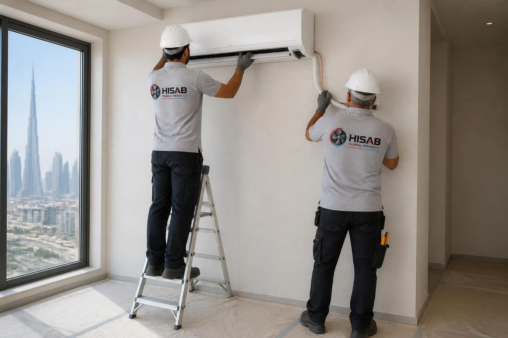

الباقة 1
تكييف سبليت
وحدات سبليت جدارية للشقق والغرف والمكاتب في المباني والفلل الجديدة.
الأنسب لـ: الشقق في الأبراج الجديدة، غرف الفلل، المكاتب
- فحص الحمل الحراري لكل غرفة
- توريد وحدات سبليت إنفرتر
- أنابيب نحاس وعزل وخطوط تصريف
- تثبيت الوحدة الخارجية والحوامل
- الاختبار والتشغيل والتسليم